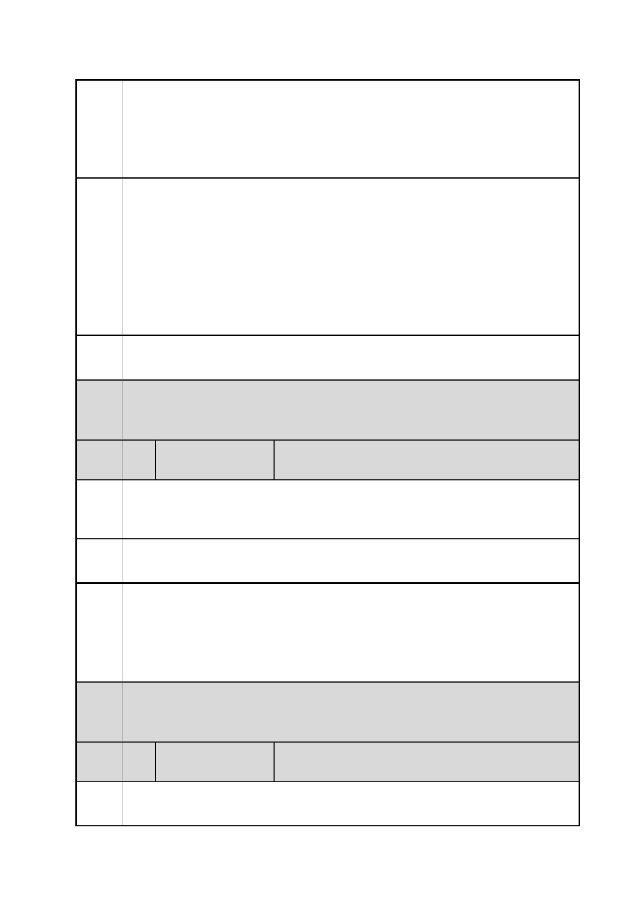

臺北市都市計畫委員會 公民或團體陳情意見綜理表
案
名
市府
回應
委員
會議
決議
編
號
陳情
理由
建議
辦法
市府
回應
委員
會議
決議
編
號
陳情
理由
「變更臺北市信義區逸仙段二小段 33 地號等 21 筆土地（原臺北機廠）
工業區為創意文化專用區、特定專用區、道路及綠地用地主要計畫案」
及「擬定臺北市信義區逸仙段二小段 33 地號等 21 筆土地（原臺北機
廠）創意文化專用區、特定專用區、道路及綠地用地細部計畫暨劃定
都市更新地區計畫案」
會得悉，就以台北為例，大都會客運就保存了公車處年代的一台天然
氣巴士，另行將退役的全台首款低底盤巴士 Ikarus 412 以至國光號
MCI 96A3，都是值得作保留的例子。
11）希望台北市政府以至尊敬的馬英九總統可懸崖勒馬，不要成為破
壞台灣交通文物的劊子手，更希望馬總統可成就全亞洲第一個跨模式
的交通博物館誕生。
12）如就交通博物館的規劃、營運等需要更多資料，歡迎聯絡本會，
本會定當盡量提供協助。
同編號 1 市府回應內容。
內容同編號 1。
27 陳情人
立法院 鄭立法委員麗君 辦公室
針對原臺北機廠文史資料之保存與未來發展，立法院教育與文化委員
會已要求文化部在 1 月 12 日前會同交通部等相關部會舉辦公聽會。
為求政府施政之一貫與妥善，市都委會應待其後再作決定。
申請單位交通部臺灣鐵路管理局在取得其預算審議機關立法院同意
原臺北機廠未來發展方向前，配套之都市計畫案應暫緩審議。
本計畫區內文化資產價值之鑑定，業經臺北市文化資產審議委員會充
分討論及審定，並經市府公告指定及登錄為古蹟、歷史及建築及古蹟
附帶保留地景等。至公民或團體向文化部陳情指定臺北機廠為國定古
蹟之訴求，係啟動另一更高層次文化資產指定的程序，暫不影響本案
都市計畫審議程序之進行。
內容同編號 1。
28 陳情人
臺北市議員 徐議員佳青
1.北市美術館規劃使用策展皆可再蓬勃，不需再蓋。
2.文創概念在北市大小聚落已臻多元成熟，無須疊床架屋。
第 37 頁/共 154 頁